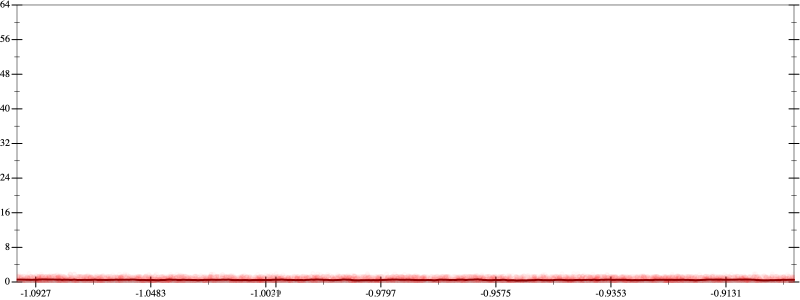
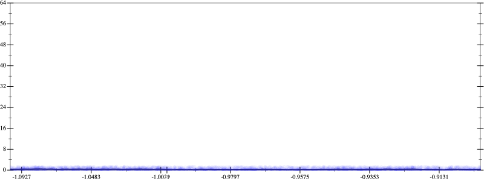
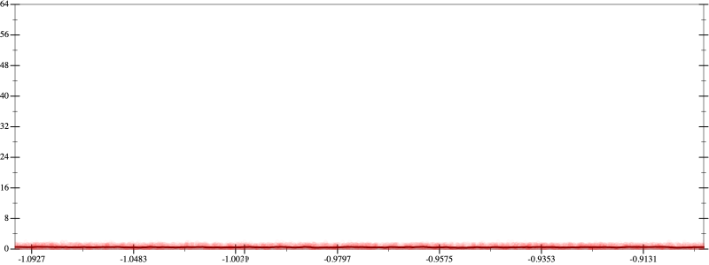
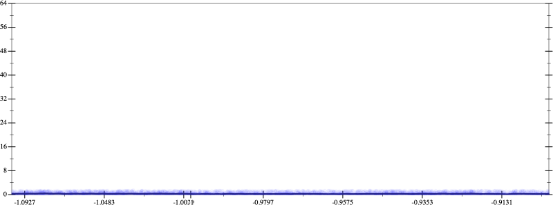

Initial program 0.5
\[\left(\left(\left(\left(1.0 + -5.0 \cdot x\right) + 5.0 \cdot \left(x \cdot x\right)\right) + -1.666667 \cdot \left(\left(x \cdot x\right) \cdot x\right)\right) + 0.208333 \cdot \left(\left(\left(x \cdot x\right) \cdot x\right) \cdot x\right)\right) + -0.008333 \cdot \left(\left(\left(\left(x \cdot x\right) \cdot x\right) \cdot x\right) \cdot x\right)\]
Applied simplify0.3
\[\leadsto \color{blue}{\left(x \cdot -5.0 + 1.0\right) + \left(\left(\left(x \cdot x\right) \cdot \left(x \cdot x\right)\right) \cdot \left(-0.008333 \cdot x + 0.208333\right) + \left(x \cdot x\right) \cdot \left(-1.666667 \cdot x + 5.0\right)\right)}\]
- Using strategy
rm Applied add-log-exp0.3
\[\leadsto \left(x \cdot -5.0 + 1.0\right) + \left(\left(\left(x \cdot x\right) \cdot \left(x \cdot x\right)\right) \cdot \left(-0.008333 \cdot x + 0.208333\right) + \color{blue}{\log \left(e^{\left(x \cdot x\right) \cdot \left(-1.666667 \cdot x + 5.0\right)}\right)}\right)\]
Applied add-log-exp0.3
\[\leadsto \left(x \cdot -5.0 + 1.0\right) + \left(\color{blue}{\log \left(e^{\left(\left(x \cdot x\right) \cdot \left(x \cdot x\right)\right) \cdot \left(-0.008333 \cdot x + 0.208333\right)}\right)} + \log \left(e^{\left(x \cdot x\right) \cdot \left(-1.666667 \cdot x + 5.0\right)}\right)\right)\]
Applied sum-log0.3
\[\leadsto \left(x \cdot -5.0 + 1.0\right) + \color{blue}{\log \left(e^{\left(\left(x \cdot x\right) \cdot \left(x \cdot x\right)\right) \cdot \left(-0.008333 \cdot x + 0.208333\right)} \cdot e^{\left(x \cdot x\right) \cdot \left(-1.666667 \cdot x + 5.0\right)}\right)}\]
Applied add-log-exp0.3
\[\leadsto \color{blue}{\log \left(e^{x \cdot -5.0 + 1.0}\right)} + \log \left(e^{\left(\left(x \cdot x\right) \cdot \left(x \cdot x\right)\right) \cdot \left(-0.008333 \cdot x + 0.208333\right)} \cdot e^{\left(x \cdot x\right) \cdot \left(-1.666667 \cdot x + 5.0\right)}\right)\]
Applied sum-log0.3
\[\leadsto \color{blue}{\log \left(e^{x \cdot -5.0 + 1.0} \cdot \left(e^{\left(\left(x \cdot x\right) \cdot \left(x \cdot x\right)\right) \cdot \left(-0.008333 \cdot x + 0.208333\right)} \cdot e^{\left(x \cdot x\right) \cdot \left(-1.666667 \cdot x + 5.0\right)}\right)\right)}\]
Applied simplify0.3
\[\leadsto \log \color{blue}{\left({\left(e^{x \cdot x}\right)}^{\left(5.0 + -1.666667 \cdot x\right)} \cdot \left({\left({\left(e^{x}\right)}^{\left({x}^{3}\right)}\right)}^{\left(x \cdot -0.008333 + 0.208333\right)} \cdot e^{1.0 + x \cdot -5.0}\right)\right)}\]
 
